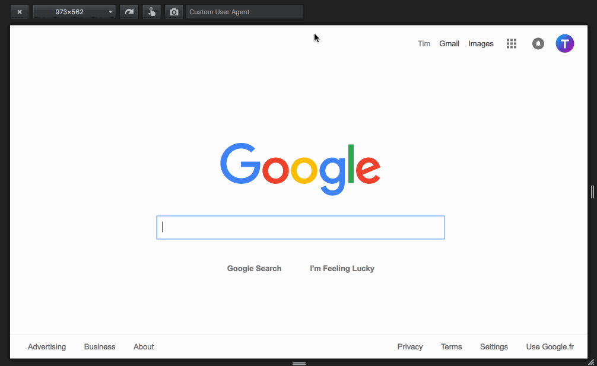
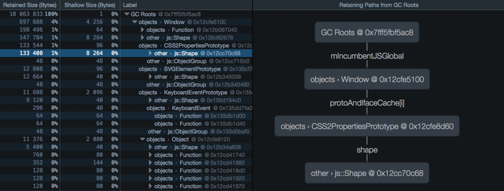
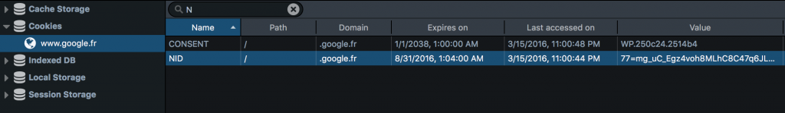
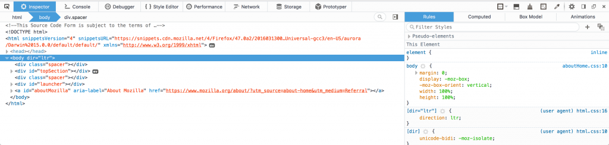
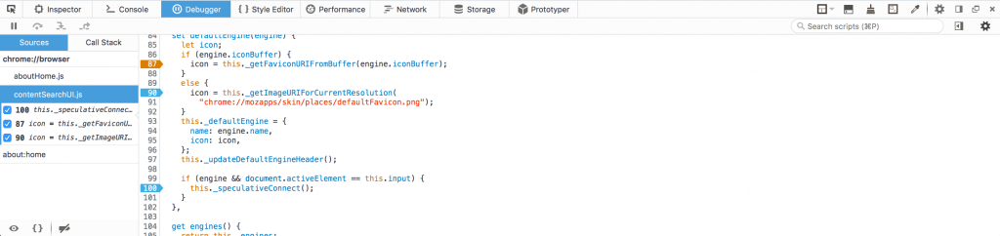
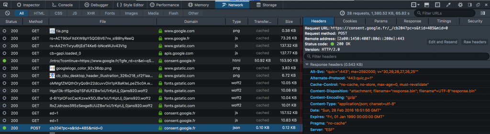

模擬使用者瀏覽器、彈出型對話框除錯，還有更多
本週將介紹 Firefox 開發者版本 (Developer)，也就是 Firefox 47！另說明了開發者工具的「Reload」附加元件，以及 Service worker 相關工具，請別錯過相關文章。
模擬使用者的瀏覽器 (User Agent)
現可透過適應性檢視模式，在任何網頁上模擬自訂的使用者瀏覽器。只要在「自訂使用者代理字串 (Custom User Agent)」欄位中鍵入所要模擬的使用者瀏覽器字串，並可藉此檢查某一網站是否能「辨識使用者瀏覽器 (User Agent Sniffing)」。舉例來說，你可鍵入行動瀏覽器的使用者瀏覽器字串，看看該網站在手機上的呈現方式。
下為本功能短片：

以圖表方式呈現保留路徑
我們已為 46 版本新增了「Dominator」檢視模式，可針對較高記憶體用量的 App 協助除錯作業。現 47 版本又為該模式增加了「保留路徑 (Retaining path)」面板，以圖表方式顯示所有節點，避免已選節點被「當做垃圾而回收 (GC)」了。只要你正想找出可能的記憶體洩漏情形進行除錯，此功能就特別有用。可參閱 MDN 文章進一步了解此功能。
下為圖表擷圖：

主控台的多行輸入
現已改善了主控台 (Console) 的多行輸入方式。只要按下「Enter」鍵，主控台將偵測你的輸入是否已完整。若已完整輸入，則按下「Enter」就會執行指令；若輸入不完全，則按下「Enter」就會新增一行供你輸入。如此可輕鬆繼續撰寫指令。
儲存空間檢測器
儲存空間檢測器 (Storage inspector) 現已支援快取儲存空間，可協助對 Service worker 的除錯作業。另請參閱 Sole Penadés 所寫的部落格文章，了解 Service worker 的除錯細節。
除了支援快取的儲存空間之外，現更可透過工具列頂端的搜尋欄位來篩選目錄。下為該功能擷圖：

主題變更
我們另小幅度微調了工具箱的視覺效果，如縮減了預設分頁寬度，並新增記憶體工具內的圖示。當然也進行了大幅度的變化，例如徹底改頭換面的「亮」主題，提供更清晰的外觀與感覺。
新的亮主題擷圖：

另更新了除錯器 (Debugger) 的風格：現以橘色強調程式碼行中的條件式中斷點 (Conditional breakpoint)。下為擷圖：

最後，我們把「網路 (Network)」監控器的工具列搬到上方，如此更易於閱讀且與其他工具的配置更為一致。

####
針對附加元件的彈出型對話框除錯
為了準備迎接 WebExtensions，我們另增多個新功能以簡化附加元件的除錯作業。47 版本可輕鬆檢視彈出型對話框。你現在可鎖定彈出型對話框，且即便點擊其他地方也不會讓彈出型對話框消失。若要使用此功能，須先啟動瀏覽器工具列，再點擊工具箱右上角的「四個方塊」圖示。可參閱這裡進一步了解該如核對自己的擴充套件進行除錯。
另有短片簡單呈現此功能：
其他重要變更
除了上述改善之處外，還提升了工具箱的其他地方，包含：
- 檢視器現可設定是否要省略＼截斷過長的 DOM 屬性 (Bug 1225063 開發記錄)
- 現可透過「mdn css」此 GCLI 指令，取得 MDN 上的相關文章 (Bug 768469 開發記錄)
由於 3D 檢視模式會與 Firefox 的多程序 (Multi-process) 版本衝突，我們也移除了此功能。若你仍有需要，可安裝此一附加元件續用此模式。
最後，字型檢視器現已預設關閉。你可透過 about:config 的 devtools.fontinspector.enabled 設定，重新啟動此工具。
感謝對開發者 (Developer) 版本做出貢獻的所有人！請立刻安裝最新版開發者版本並讓我們知道你的意見。
原文連結：Developer Edition 47 – User agent emulation, popup debugging and more